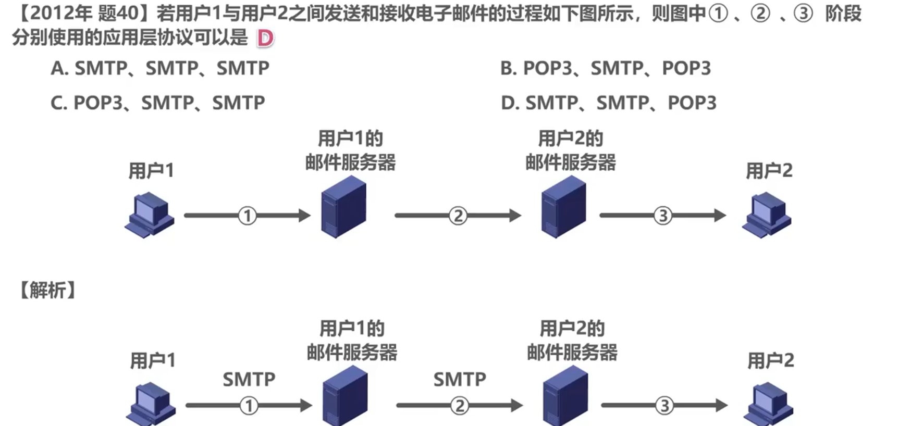

应用层
应用层是计算机网络体系结构的最顶层，是设计和建立计算机网络的最终目的，也是计算机网络中发展最快的部分。
应用层
概述
应用层是计算机网络体系结构的最顶层，是设计和建立计算机网络的最终目的，也是计算机网络中发展最快的部分。
C/S方式和P2P方式
网络应用程序运行在处于网络边缘的不同的端系统上，通过彼此间的通信来共同完成某项任务。
开发一种新的网络应用首先要考虑的问题就是网络应用程序在各种端系统上的组织方式和他们之间的关系。
目前流行的主要有以下两种：客户/服务器方（Client/Server）式和对等(Peer-to-Peer)方式。
C/S方式
- 客户/服务器方式
客户和服务器是指通信中所涉及的两个应用进程；
客户/服务器方式所描述的是进程之间服务和被服务的关系；
客户是服务请求方，服务器是服务提供方；
服务器总是处于运行状态，并等待客户的服务请求。服务器具有固定端口号（例如HTTP服务器的默认端口号为80），而运行服务器的主机也具有固定的IP地址。 - C/S方式是因特网上传统的、同时也是最成熟的方式，很多我们熟悉的网络应用采用的都是C/S方式。包括万维网WWW、电子邮件、文件传输FTP等。
- 基于C/S方式的应用服务通常是服务集中型的，即应用服务集中在网络中比客户计算机少得多的服务器计算机上。
由于一台服务器计算机要为多个客户机提供服务，在C/S应用中，常会出现服务计算机跟不上众多客户机请求的情况。为此，在C/S应用中，常用计算机群集（或服务器场）构建一个强大的虚拟服务器。
P2P方式
- 对等方式
在P2P方式中，没有固定的服务请求者和服务提供者，分布在网络边缘各端系统中的应用进程是对等的，被称为对等放好。对等方相互之间直接通信，每个对等方既是服务的请求者，又是服务的提供者。 - 目前，在因特网上流行的P2P应用主要包括P2P文件共享、即时通信、P2P流媒体、分布式存储等。
- 基于P2P的应用是服务分散型的，因为服务不是集中在少数几个服务器计算中，而是分散在大量对等计算机中，这些计算机并不为服务提供商所有，而是为个人控制的桌面计算机和笔记本电脑，他们通常位于住宅、校园和办公室中。
- P2P方式的最突出特性之一就是它的可扩展性。因为系统每增加一个对等方，不仅增加的是服务的请求者，同时也增加了服务的提供者，系统性能不会因规模的增大而降低。
动态主机配置协议DHCP
DHCP的作用
如果我们给网络中添加一台DHCP服务器，在该服务器设置好可为网络中其他各主机配置的网络配置信息。网络中各主机开机后自动启动DHCP程序向DHCP服务器请求自己的网络配置信息。这样，网络中的各主机就都可以从DHCP服务器自动获取网络配置信息而不用手工参与。
DHCP工作过程
寻找DHCP服务器
当启用主机的DHCP后，DHCP客户将广播发送DHCP发现报文，封装该报文的IP数据报的源IP地址为0.0.0.0，这是因为主机目前还未分配到IP地址，因此使用该地址来代替。目的IP地址为广播地址255.255.255.255，之所以进行广播发送，是因为主机现在并不知道网络中有哪几个DHCP服务器，它们的IP地址各是什么。由于是广播的IP数据报，因此网络中的所有设备都会收到该IP数据报，解封出封装有DHCP发现报文的UDP用户数据报。对于DHCP客户，其应用层没有监听该UDP用户数据报目的端口67的进程，也就是DHCP服务器的进程，因此无法交付DHCP发现报文，只能丢弃；而对于DHCP服务器，其应用层始终运行着DHCP服务器进程，因此会接受该DHCP发现报文并做出响应。
DHCP报文逐层封装的过程：封装有DHCP报文的UDP用户数据报，在网络层会被封装成IP数据报，然后再根据所使用的网络接口，封装成相应的数据链路层的帧进行发送，例如封装成以太网帧。
提供IP地址租用
DHCP服务器收到DHCP发现报文后，根据其中封装的DHCP客户端的MAC地址来查找自己的数据库，看是否有针对该MAC地址的配置信息，如果有，则使用这些配置信息来构建并发送DHCP提供报文；如果没有，则采用默认配置信息来构建并发送DHCP提供报文，封装该报文的IP数据报的源IP地址为DHCP服务器的IP地址，目的IP地址仍为广播地址。仍然使用广播地址的原因是，主机目前还没有配置IP地址，为了使主机可以收到，只能发送广播。对于DHCP服务器，其应用层没有监听该UDP用户数据报目的端口68的进程，也就是DHCP客户进程，因此无法交付DHCP提供报文，只能丢弃。对于DHCP用户其应用层运行着DHCP客户进程，因此会接受该DHCP提供报文并作出相应的处理。DHCP客户会根据DHCP提供报文中的事务ID，来判断该报文是否是自己请求的报文，否则丢弃该报文。
DHCP发现报文其内部封装有事务ID和DHCP客户端的MAC地址。DHCP提供报文中封装有事务ID、配置信息（IP地址、子网掩码、地址租期、默认网关、DNS服务器）DHCP服务器从自己的IP地址池中挑选待租用给主机的IP地址时，会使用ARP确保所选IP地址未被网络中其他主机占用。
接受IP地址租约
DHCP客户收到两个DHCP服务器发来的DHCP提供报文，DHCP客户从中选择一个，一般来说，选择先到的那个，并向所选择的DHCP服务器发送DHCP请求报文。封装该报文的IP地址仍为0.0.0.0，因为此时DHCP客户才从多个DHCP服务器中挑选一个作为自己的DHCP服务器，它首先需要征得该服务器的同意，之后才能正式使用向该DHCP服务器租用的IP地址，目的IP地址仍为广播地址；目的是不用向网络中的每一个DHCP服务器单播发送DHCP请求报文，来告知它们是否请求它们作为自己的DHCP服务器。
DHCP请求报文中封装有事务ID、DHCP客户端的MAC地址、接收的租约中的IP地址、提供此租约的DHCP服务器端的IP地址
确认IP地址租约

假设DHCP客户选择DHCP服务器1作为自己的DHCP服务器，并且DHCP服务器1接受该请求，于是DHCP服务器1给DHCP客户发送DHCP确认报文，封装该报文的IP数据报的源IP地址为DHCP服务器1的IP地址，目的IP地址仍为广播地址；DHCP客户收到该确认报文后，就可以使用所租用到的IP地址了。
主机使用ARP检测所分配到的IP地址是否已被网络中其他主机占用：若被占用：给DHCP服务器发送“DHCP DECLINE”谢绝报文撤销IP地址租约，并重新发送“DHCP DISCOVER”报文；若未被占用：可以使用租约中的IP地址与网络中其他主机通信了。
IP地址续约
当租用期过了一半，DHCP客户会向DHCP服务器发送DHCP请求报文，来请求更新租用期。封装该报文的IP数据报的源IP地址为DHCP客户之前租用到的IP地址，目的IP地址为DHCP服务器1的地址。DHCP服务器若同意，则发回DHCP确认报文，DHCP客户就得到了新的租用期；DHCP服务器若不同意，则发回DHCP否认报文。这时，DHCP客户必须立即停止使用之前租用的IP地址，并重新发送DHCP发现报文来重新申请IP地址；DHCP服务器若未作出响应，则在租用期过了87.5%时，DHCP客户必须重新发送DHCP请求报文，然后继续等待DHCP服务器可能做出的反应（若DHCP未作出反应，则当租用期到期后，DHCP客户必须立即停止使用之前租用的IP地址，并重新发送DHCP发现报文来重新申请IP地址。）
随时解除IP地址租用
DHCP客户可以随时提前终止DHCP服务器所提供的租用期，这时只需向DHCP服务器发送DHCP释放报文段即可。
DHCP中继代理
我们并不愿意在每一个网络上都设置一个DHCP服务器，因为这样会使DHCP服务器的数量太多。
该网络中的各主机是不可以通过DHCP来自动获取到网络配置信息，因为该网络中的主机广播发送DHCP发现报文，但该广播报文不会被路由器转发，而是丢弃。解决方法是给该路由器配置DHCP服务器的IP地址并使之成为DHCP中继代理。这样该网络中的各主机就可以自动获取到IP地址等网络配置信息。当该路由器收到广播的DHCP发现报文后，会将其单播转发给DHCP服务器。
域名系统DNS
域名系统DNS概念
因特网采用层次树状结构的域名结构。域名的结构由若干个分量组成，各分量之间用“点”隔开，分别代表不同级别的域名：
- 每一级的的域名都有英文字母和数字组成，不超过63个字符，不区分大小写字母。
- 级别最低的域名写在最左，而级别最高的顶级域名写在最右。
- 完整的域名不超过255个字符。
域名系统既不规定一个域名需要包含多少下级域名，也不规定每一级的域名代表什么意思。各级域名由上一级的域名管理机构管理，而最高的顶级域名则由因特网名称与数字地址分配机构ICANN进行管理。顶级域名TLD分为以下三类：
- 国家顶级域名nTLD 采用ISO 3166的规定。如cn表示中国，us表示美国，uk表示英国等等。
- 通用顶级域名gTLD 常见的7个通用顶级域名：com（公司企业）、net（网络服务机构）、org（非营利性组织）、int（国际组织）、edu（美国教育结构）、gov（美国政府部门）、mil（美国军事部门）。
- 反向域arpa 用于反向域名解析，即IP地址反向解析为域名。
在国家顶级域名下注册的二级域名均由该国家自行确定。例如：顶级域名为jp的日本，将其教育和企业机构的二级域名定位ac和co，而不用edu和com。我国将二级域名划分为两类：
- 类别域名：ac（科研机构）、com（工、商、金融等企业）、edu（教育机构）、gov（政府部门）、net（提供网络服务的机构）、mil（军事机构）和org（非营利性组织）。
- 行政区域名：共34个，适用于我国的各省、自治区、直辖市。例如：bj北京市、sh上海市、js江苏省等等。
这种按等级管理的命名方法便于维护名字得到唯一性，并且也容易设计出一种高效的域名查询机制。域名只是个逻辑概念，并不代表计算机所在的物理地点。
域名和IP地址的映射关系必须保存在域名服务器中，供所有其他应用查询。显然不能将所有信息都储存在一台域名服务器中。DNS使用分布在各地的域名服务器来实现域名到IP地址的转换。域名服务器可以划分为以下四种不同的类型：
- 根域名服务器：最高层次的域名服务器。每个根域名服务器都知道所有的顶级域名服务器的域名及其IP地址。因特网上共有13个不同IP地址的根域名服务器。尽管这13个根域名服务器中的每一个都视为单个服务器，但实际上是由许多分布在世界各地的计算机构成的服务器群集。当本地域名服务器向根域名服务器发出查询请求时，路由器就把查询请求报文转发到离这个DNS客户最近的一个根域名服务器。这就加快了DNS的查询过程，同时也更合理地利用了因特网的资源。根域名服务器通常并不直接对域名进行解析，而是返回该域名所属顶级域名服务器的IP地址。
- 顶级域名服务器：这些域名服务器负责管理在该顶级域名服务器注册所有二级域名。当收到DNS查询请求时就给出相应的回答（可能是最后的结果，也可能是下一级权限域名服务器的IP地址）。
- 权限域名服务器：负责管理某个区的域名。每一个主机的域名都必须在某个权限域名服务器处注册登记。因此权限域名服务器知道其管辖的域名与IP地址的映射关系。另外，权限域名服务器还知道其下级域名服务器的地址。
- 本地域名服务器：本地域名服务器不属于上述的域名服务器的等级结构。当一个主机发出DNS请求报文时，这个报文就首先被送往该主机的本地域名服务器。本地域名服务器起着代理的作用，会将该报文转发到上述的域名服务器的等级结构中。
域名系统DNS的作用
当我们在浏览器地址栏输入某个Web服务器域名时，用户主机会首先在自己的DNS高速缓存中查找该域名所对应的IP地址。
如果没有找到，则会向网络中的某台DNS服务器发出DNS查询。DNS服务器中有域名和IP地址映射关系的数据库，当DNS服务器收到DNS查询报文后，在其数据库中进行查寻，之后，将查寻结果发送给用户主机，用户主机中的浏览器就可以通过Web服务器的IP地址对其进行访问了。
DNS使大多数域名都在本地解析，仅少量解析需要在因特网上通信，因此系统效率很高。由于DNS是分布式系统，即使单个计算机出了故障，也不会妨碍整个系统的正常运行。
域名解析过程
递归查询

主机想知道某网址的IP地址，首先向其本地域名服务器进行递归查询。本地域名服务器收到递归查询委托后，也采用递归查询的方式向某个根域名服务器查询。根域名服务器收到递归查询的委托后，也采用递归查询的方式向某个顶级域名服务器查询。顶级域名服务器收到递归查询的委托后，也采用递归查询的方式向某个权限域名服务器查询。当查询到域名所对应的IP地址后，查询结果会在之前受委托的各域名服务器之间传递，最终传回给用户主机。
迭代查询
主机首先向其本地域名服务器进行递归查询，本地域名服务器采用迭代查询，它先向某个根域名服务器查询。根域名服务器告诉本地域名服务器，下一次应查询的顶级域名服务器的IP地址。本地域名服务器向顶级域名服务器进行迭代查询，顶级域名服务器告诉本地域名服务器下一次应查询的权限域名服务器的IP地址。本地域名服务器向权限域名服务器进行迭代查询。权限域名服务器告诉本地域名服务器所查询的域名的IP地址。本地域名服务器最后把查询结果告诉主机。
由于递归查询对于被查询的域名服务器负担太大，所以通常从请求主机到本地域名服务器的查询是递归查询，而其余的查询是迭代查询。
高速缓存
- 为了提高DNS的查询效率，并减轻根域名服务器的负荷和减少因特网上的DNS查询报文数量，在域名服务器中广泛使用了高速缓存。高速缓存用来存放最近查询过的域名以及从何处获得域名映射信息的记录。
- 由于域名到IP地址的映射关系并不是永久不变，为保持高速缓存中的内容正确，域名服务器应为每项内容设置计时器并删除超过合理时间的项，如每个项目只存放两天。
- 不但在本地域名服务器中需要高速缓存，在用户主机中也很需要。许多用户主机在启动时从本地域名服务器下载域名和IP地址的全部数据库，维护存放自己最近使用的域名的高速缓存，并且只在从缓存中找不到域名时才向域名服务器查询。同理，主机也需要保持高速缓存中内容的正确性。
文件传送协议FTP
概念
FTP提供交互式的访问，允许客户指明文件的类型与格式（如指明是否使用ASCII码），并允许文件具有存取权限（如访问文件的用户必须经过授权，并输入有效的口令），FTP屏蔽了各计算机系统的细节，因而适合于在异构网络中任意计算机之间传送文件。
FTP采用客户/服务器方式，因特网上的FTP客户计算机可将各种类型的文件上传到FTP服务器计算机。FTP客户计算机也可以从FTP服务器计算机下载文件。根据应用需求的不同，FTP服务器可能需要一台高性能、高可靠性的服务器计算机，也可能只需要一台普通的个人计算机即可。
FTP的常见用途是在计算机之间传输文件，尤其是用于批量传输文件。FTP的另一个常见用途是让网站设计者将构成网站内容的大量文件批量上传到他们的Web服务器。
基本工作原理
FTP客户随机选择一个临时端口号，FTP服务器使用熟知端口号21与其建立TCP连接，用于FTP客户与服务器之间传送FTP的相关控制命令，即命令通道。有数据要传输时，FTP客户通过命令通道告知FTP服务器来与自己的另一个临时端口号建立TCP连接，建立数据通道。FTP客户再随机选择另一个端口号，FTP服务器使用熟知端口号20与其建立TCP连接，这条TCP连接用于FTP客户与服务器之间传送文件，即数据通道。由于在建立数据通道时，FTP服务器主动连接FTP客户，因此称为主动模式。
控制连接在整个会话期间一直保持打开状态，用于传送FTP相关控制命令。数据连接用于文件传输，在每次文件传输时才建立，传输结束就关闭。
被动模式的不用之处在于当有数据要传输时，FTP客户通过命令通道告知FTP服务器开启某个临时端口被动等待TCP连接，建立数据通道。
电子邮件
概念
电子邮件系统采用客户/服务器方式，其由三个主要组成构建：用户代理、邮件服务器以及电子邮件所需的协议。用户代理是用户与电子邮件系统的接口，又称为电子邮件客户端软件。邮件服务器是电子邮件系统的基础设施。因特网上所有的ISP都有邮件服务器，其功能是发送和接收邮件，同时还要负责维护用户的邮箱。协议包括邮件发送协议（如SMTP）和邮件读取协议（如POP3，IMAP）。
SMTP
简易邮件传送协议SMTP的基本工作原理
电子邮件的信息格式并不是由SMTP定义的，而是在RFC 822中单独定义。RFC文档已在2008年更新为RFC5322。一个电子邮件有信封和内容两部分。而内容又由首部和主体两部分构成。
SMTP协议只能传送ASCII码文本数据，不能传送可执行文件或其他的二进制对象。SMTP不能满足传送多媒体邮件（例如带有图片、音频或视频数据）的需要。并且许多其他非英语国家的文字（例如中文、俄文、重音符号法文或德文）也无法用SMTP传送。
为解决SMTP传送非ASCII码文本的问题，提出了多用途因特网邮件扩展MIME（也用于后来同样面向ASCII字符的HTTP）。
- 增加了5个新的邮件首部字段，提供了有关邮件主体的信息。
- 定义了许多邮件内容的格式，对多媒体电子邮件的表示方法进行了标准化。
- 定义了传送编码，可对任何内容格式进行转换，而不会被邮件系统改变。
POP和IMAP
邮局协议POP，POP3是其第三个版本，是因特网正式标准。用户只能以下载并删除方式或下载并保留方式从邮件服务器下载邮件到用户方计算机。不允许用户在邮件服务器上管理自己的邮件。（例如创建文件夹，对邮件进行分类管理等）。
因特网邮件访问协议IMAP，IMAP4是其第四个版本，目前还只是因特网建议标准。功能比POP3强大的邮件读取协议。用户在自己的计算机上就可以操控邮件服务器中的邮箱，就像在本地操控一样，因此IMAP是一个联机协议。
POP3和IMAP4都采用基于TCP连接的客户/服务器方式。POP3使用熟知端口110，IMAP4使用熟知端口143.
基于万维网的电子邮件
通过浏览器登录（提供用户名和口令）邮件服务器万维网网站就可以撰写、收发、阅读和管理电子邮件。这种工作模式与IMAP类似，不同的是用户计算机无需安装专门的用户代理程序，只需要使用通用的万维网浏览器。邮件服务器网站通常都提供非常强大和方便的邮件管理功能，用户可以在邮件服务器网站上管理和处理自己的邮件，而不需要将邮件下载到本地进行管理。

万维网WWW
万维网并非某种特殊的计算机网络，它是一个大规模的、联机式的信息储藏所，是运行在因特网上的一个分布式应用，利用网页之间的超链接将不同网站的网页链接成一张逻辑上的信息网。为了方便访问在世界范围的文档，万维网使用统一资源定位符URL来指明因特网上任何种类“资源”的位置。URL的一般形式由以下四个部分组成：

超文本传输协议HTTP
HTTP定义了浏览器（即万维网客户进程）怎样向万维网服务器请求万维网文档，以及万维网服务器怎样把万维网文档传送给浏览器。
HTTP/1.0
HTTP/1.0采用非持续连接方式。在该方式下，每次浏览器要请求一个文件都要与服务器建立TCP连接，当收到响应后就立即关闭连接。
每请求一个文档就要有两倍RTT的开销。若一个网页上有很多引用对象（例如图片等），那么请求每一个对象都需要花费2RTT的时间。为了减小时延，浏览器通常会同时建立多个并行的TCP连接请求多个对象。但是，这会大量占用万维网服务器的资源，特别是万维网服务器往往要同时服务于大量客户的请求，这会使其负担很重。
HTTP/1.1
HTTP/1.1采用持续连接方式。在该方式下，万维网服务器在发送响应后仍然保持这条连接，使同一个客户（浏览器）和该服务器可以继续在这条连接上传送后续的HTTP请求报文和响应报文。这并不局限于传送同一个页面上引用的对象而是只要这些文档都在同一个服务器上就行。
为了进一步提高效率，HTTP/1.1的持续连接还可以使用流水线方式工作，即浏览器在收到HTTP的响应报文之前就能够连续发送多个请求报文。这样的一个接一个的请求报文到达服务器后，服务器就发回一个接一个的响应报文。这样就节省了很多个RTT时间，使TCP连接中的空闲时间减少，提高了下载文档的效率。
HTTP报文格式
HTTP是面向文本的，其报文中的每一个字段都是一些ASCII码串，并且每个字段的长度都是不确定的。
HTTP请求报文
HTTP响应报文
Cookie
概念
Cookie在服务器上用于记录用户信息，早期的万维网应用非常简单，仅仅是用户查看存放在不同服务器上的各种静态的文档。因此HTTP被设计为一种无状态的协议，这样可以简化服务器的设计。现在用户可以通过万维网实现复杂的应用，如网上购物、电子商务等，这些应用往往需要万维网服务器识别用户。Cookie提供了一种机制使得万维网服务器能够记住用户，而无需用户主动提供用户标识信息，即Cookie是一种对无状态的HTTP进行状态化的技术。
工作原理
用户主机中的浏览器进程与万维网中的服务器进程建立TCP连接，当用户浏览器进程初次向服务器进程发送HTTP请求报文时，服务器进程就会为其产生一个唯一的Cookie识别码，并以此为索引在服务器的后端数据库中创建一个项目，用来记录该用户访问该网站的各种信息。然后给浏览器进程发回HTTP响应报文，在响应报文中，包含有一个首部字段Set-Cookie的首部行，该字段的取值是Cookie识别码。当浏览器进程收到该响应报文后，就在一个特定的Cookie文件中添加一行，记录该服务器的域名和Cookie的识别码。
当用户再次使用该浏览器访问这个网站时，每发送一个HTTP请求报文，浏览器都会从Cookie文件中取出该网站的Cookie识别码，并放到HTTP请求报文的Cookie首部行中。服务器根据Cookie识别码就可以识别出该用户，并返回该用户个性化网页。
万维网缓存与代理服务器
在万维网中还可以使用缓存机制以提高万维网的效率，万维网缓存又称为Web缓存，可位于客户机，也可位于中间系统上，位于中间系统上的Web缓存又称为代理服务器。Web缓存把最近的一些请求和响应暂存于本地磁盘中。当新请求到达时，若发现这个请求与暂时存放的请求相同，就返回暂存的响应，而不需要按URL的地址再去因特网访问该资源，这样可以大大减少了链路上的通信量，因为减少了访问因特网的时延。
原始服务器通常会为每个响应的对象，设定一个修改时间字段，和一个有效日期字段。当校园网中的某个主机要请求原始服务器中的该文档时，它首先向校园网中的代理服务器发送请求，若代理服务器中的该文档未过期，则代理服务器将其封装在响应报文中发回给主机。若代理服务器中的该文档已过期，则代理服务器会向因特网上的原始服务器发送请求，在请求报文中包含有一个首部字段为If-modified-since的首部行，取值为该文档的修改日期，原始服务器根据文档的修改日期，就可判断出代理服务器中存储的该文档是否与自己存储的该文档一致。如果一致，则给代理服务器发送不包含实体主体的响应，代理服务器重新更新该文档的有效日期，然后将该文档封装在响应报文中发回给主机；如果不一致，则给代理服务器发送封装有该文档的响应报文。